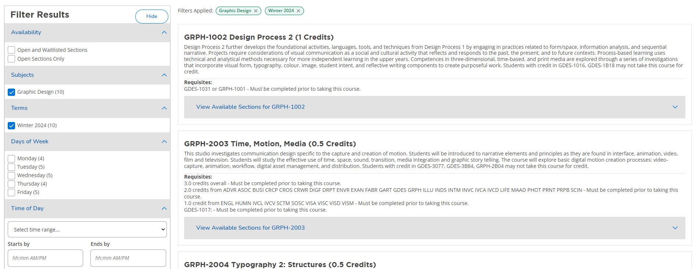
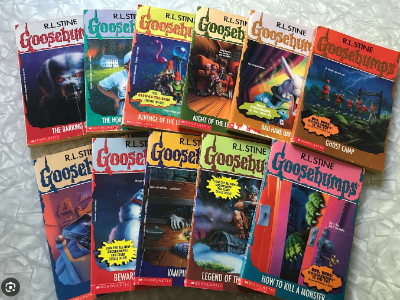
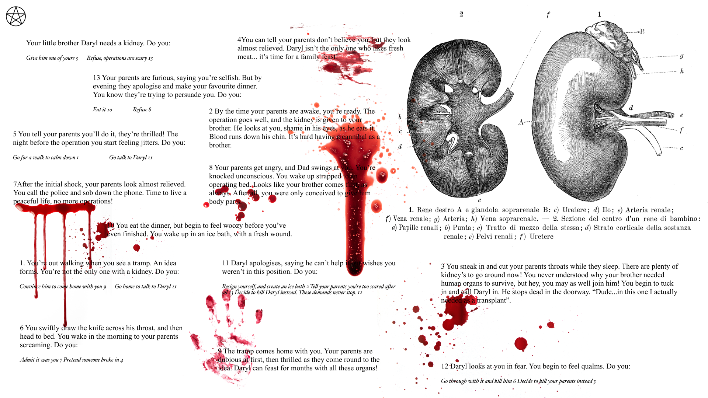

Hide/Show effect in Web Development
For this assignment, I first researched into how the Hide and Show effect has been used in Web development. This effect is commonly used to enhance the user experience, manage content visibility by decluttering less important things and also to provide some interactive features.
Some of the most common things used would be:
1. Collapsible sections: A great example of this would be the FAQ sections on the website, which reveal a particular answer only when clicked on its question.

2. Navigation bars on Websites: Mobile websites often use the show and hide feature to hide extra information, hence providing a clean interface.

3. Filters: Often the filter section in many E-commerce websites show and hide products based on the list of filters we have applied.
4. Notifications: Notification bars or panels would often use this function to appear and disappear when there are important updates, alerts or messages for the user.
Hide/ Show effect in our regular lives
There are many instances in real life too that have the hide/show effect. I thought there would be an interesting opportunity to have a reflection of the real life hide and show examples into the web platform. Here are some of the examples I considered:
1. Light Switch: I considered the turning on and off of a light switch to be used as an interaction in this project. The idea was to showcase a building in a city with many windows on its façade. And a click on every window would trigger the light switch and we would be able to see what’s happening inside. The concept was to showcase how every person in this world has a life that is as complex and vivid as our own. To execute this idea, I thought of overlaying the windows with darker coloured rectangles and every time you click on them, they disappear. But I grew out of that idea almost immediately as the black rectangles would look very alien to the organic illustration that I was imagining.

2. Peekaboo: I was absolutely committed to the idea of making this project revolving around the idea of peekaboo, where a mother would be peeka-booing her child on a mouse click. The twist of this story would be that a every time the mom closes her eyes, the child turns into a different monster, but returns to being a child when she opens her eyes. To execute this concept, I thought of animating a gif, and overlaying it on a jpeg. And every time you hover or click on it, the gif plays. Tried the experiment using an existing gif from giphy. Due to the idea being very simple, I canned it again.
Peekaboo Experiment3. Puzzle pieces: My mother would get me a lot of puzzle pieces as a child. The idea that the pieces are right in front of you but the whole picture is still hidden, and you have to work your way to making that fit well in the context of Hide and Show.

*drumroll* The final idea
After scrapping a ton of ideas, I finally landed myself on a concept that I was immediately excited about. I walked passed a bookstore and happened to see a Goosebumps book which reminded me of the Create Your Own Adventure (CYOA) Goosebumps books that I would read as a child. I, then decided to have a CYOA adventure on my website. This would use the concept of collapsible sections that websites often use for FAQ’s.
Once I finalized on the concept, it was a fairly quicker process. The most important was finding the right story. I have been always fascinated with the horror genre, and most of the material I have consumed growing up was horror books, series, movies, podcasts and thats the direction I had seen my project growing. During my research about short CYOA stories I landed on a reddit page, which had a story that fit my idea and the size I was looking at. This story was written by a reddit user of the name: donotdisturbpls and it was called Darryl needs a kidney. Here is the link:
CYOA Darryl needs a kidneyI dissected the pathways that led to various endings of the story and sketched out a rough wireframe as to how a user would navigate this story. There were multiple pathways that would lead to 7 brutal endings.

The next step was compositing everything on figma. The aesthetics of the webpage very inspired by the very first reading that we did by JR Carpenter,a handmade web. That website had a science textbook feel to it which I thought worked well with the genre of the story. Every dead-end needed to have some sort of signal, that the end had been reached, which is when the blood splatter came in. This is what the entire composition on figma looked like:
The Code
The code was fairly simple. It had 2 sections, one was the refresh page logo on the top-left corner. The other was the classList.toggle() method which was used to toggle the visibility of the selected element. It toggles between adding and removing CSS classes 'hidden' and 'visible to selected container element.
The Cherry on top:
As a final piece of decoration to the webpage, I added Mozarts backround score to the website, which amplifies the emotions of the story to a point where the act of cannibalism almost starts feeling surreal. This was inspired by a series I saw a while ago, Hannibal which had sequences of cannibalism juxtaposed with classical music. PS: if the music does not play for you, try clicking on the pentagram.